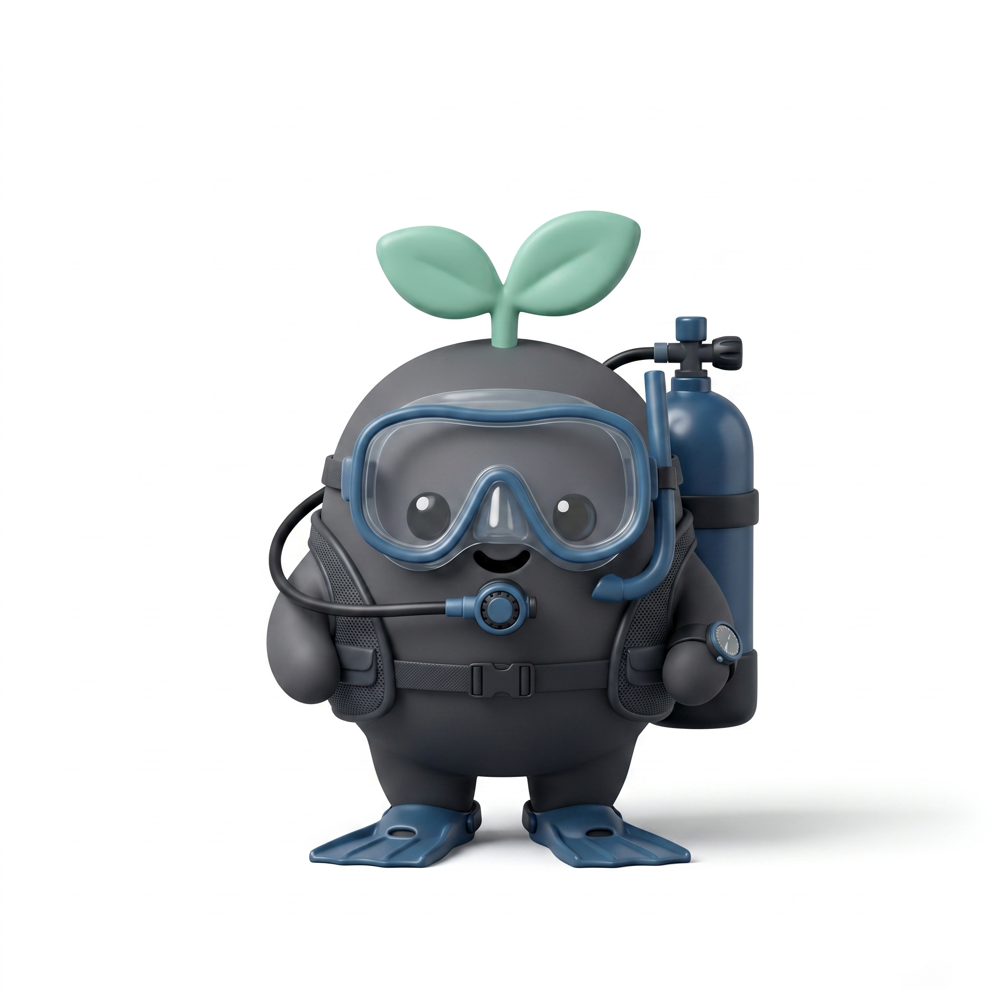

嗨！我是碳吉 🌊
準備好找尋藍碳密碼了嗎？

碳吉 TanJi
藍碳特搜隊
啟動任務
2026諾大師海洋大數據競賽
｜作品受著作權法保護，未經授權請勿複製轉載｜
tanji2026@gmail.com
碳吉 TanJi
藍碳特搜隊
特搜小組名稱 / 教師代碼
選擇您的專屬職位
🌊
海洋物理員
🌱
海洋生態員
🚢
社會溝通員
💰
財務長
📜
隊長
政策分析師
請選擇職位
2026諾大師海洋大數據競賽
｜作品受著作權法保護，未經授權請勿複製轉載｜
tanji2026@gmail.com
碳吉 TanJi
未登入
連線中
登出
階段一：全台大排雷
口頭回報數據，共同淘汰不適合的復育場址
目前剩餘
0
個候選場址
鎖定目標
，進入配置
階段二：SROI 資源配置戰情室
鎖定場址：
返回重新選址
💡 隊長專屬任務：您的滑桿已全數鎖定。請觀察下方雷達圖與預算表，透過語音指揮各專員拉動滑桿，找出最佳解並按下提交。
工程防護
海洋物理員
無防護
標準
重型
等待操作
生態規模
海洋生態員
單一
標準
大規模
等待操作
社區溝通
社會溝通員
零互動
標準
高額
等待操作
預算總量
財務長
緊縮
標準
無上限
等待操作
SROI 即時運算模型
總體預算使用率
計算中
0
上限
環境效益 (Env)
0
經濟效益 (Eco)
0
社會效益 (Soc)
0
系統通訊紀錄
> 系統初始化完成...
2026諾大師海洋大數據競賽
｜
資料來源：國家海洋資料庫及共享平臺
｜
作品受著作權法保護，未經授權請勿複製轉載｜tanji2026@gmail.com
戰情室總覽
NODASS大數據決策監控中心
在線小組
0
重置
登出
最終選址分佈
平均SROI指標
決策排行榜
各組即時決策狀態
2026諾大師海洋大數據競賽
｜
資料來源：國家海洋資料庫及共享平臺
｜
作品受著作權法保護，未經授權請勿複製轉載｜tanji2026@gmail.com